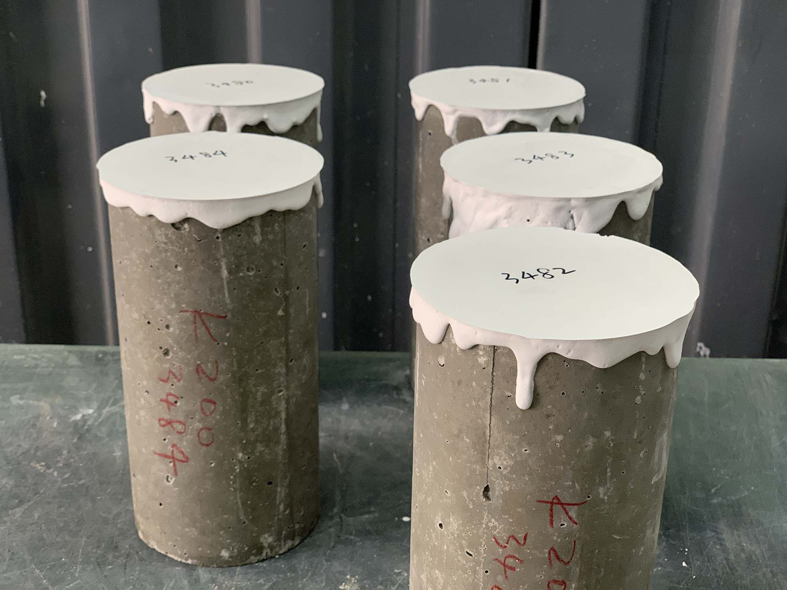
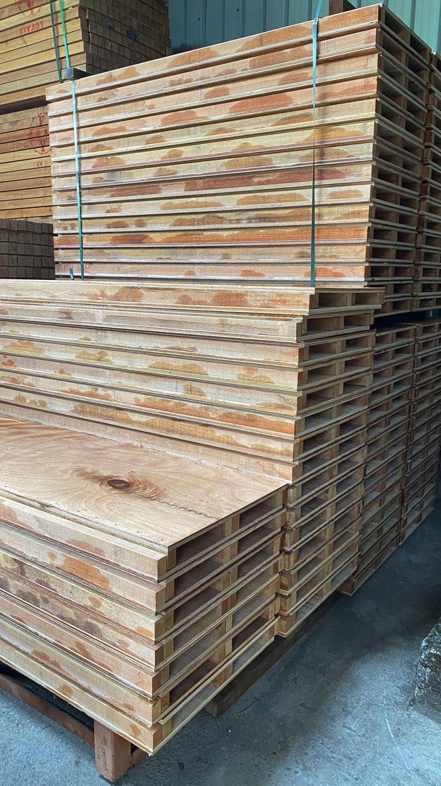
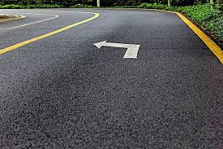
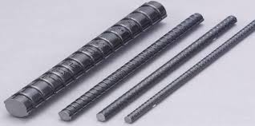

期末實作 學號:91135109 姓名:陳宥盛
土木工程相關介紹



混凝土
模板
瀝青混凝土
研習心得
鋼筋
按生產工藝分類
熱軋鋼筋
冷拔鋼筋
鋼筋的性能
抗拉強度: 鋼筋的抗拉強度較高，是其主要的力學性能之一。
延展性: 鋼筋具有良好的延展性，在受力過程中能夠變形而不易斷裂。
耐久性: 鋼筋具有良好的耐久性，能抵抗各種環境因素的腐蝕。
黏結性能: 螺紋鋼筋表面的螺紋設計增強了其與混凝土的黏結力。

鋼筋的優點
高抗拉強度和延展性。
良好的粘結性能，與混凝土結合效果好。
可以加工成各種形狀，適應不同設計需求。
耐久性強，能抵抗自然環境的腐蝕。